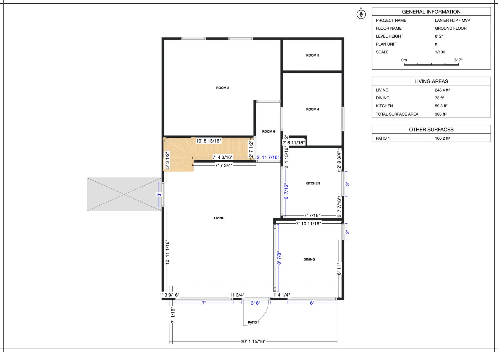
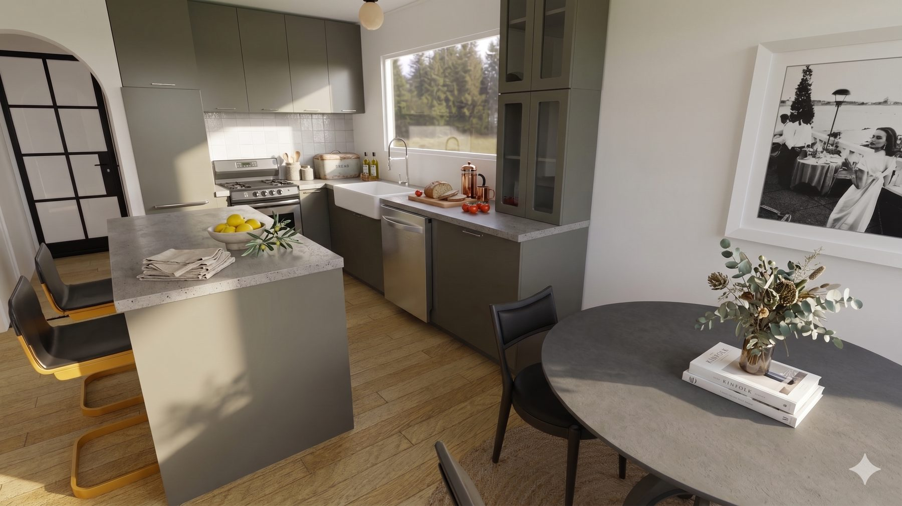
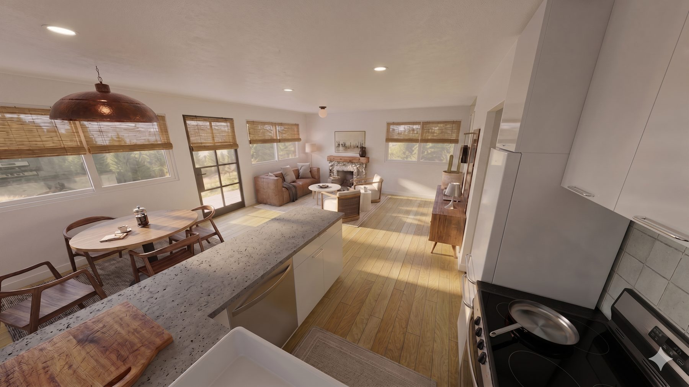
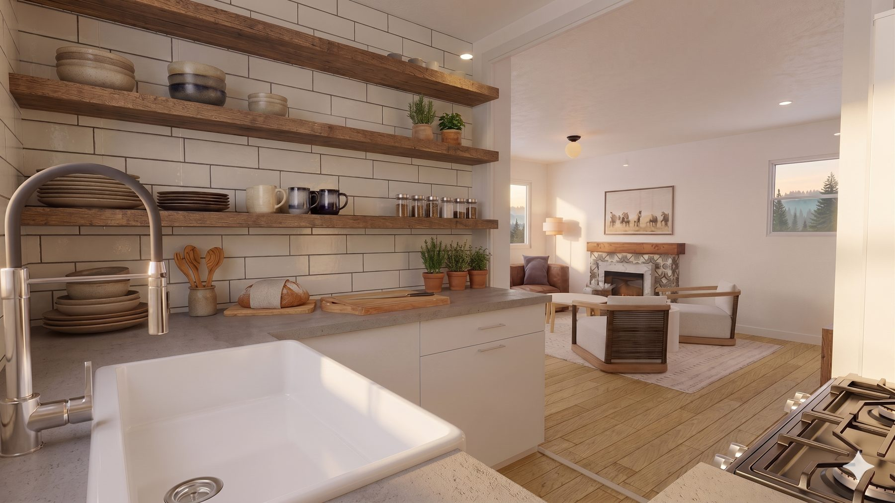
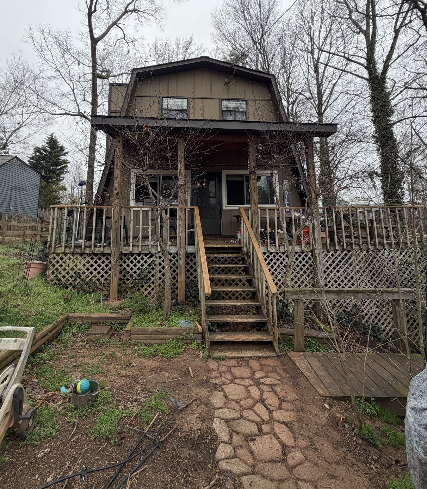
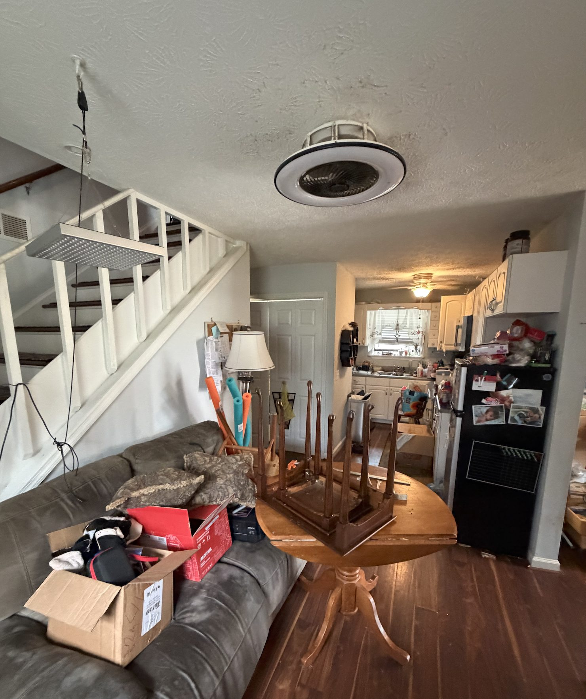
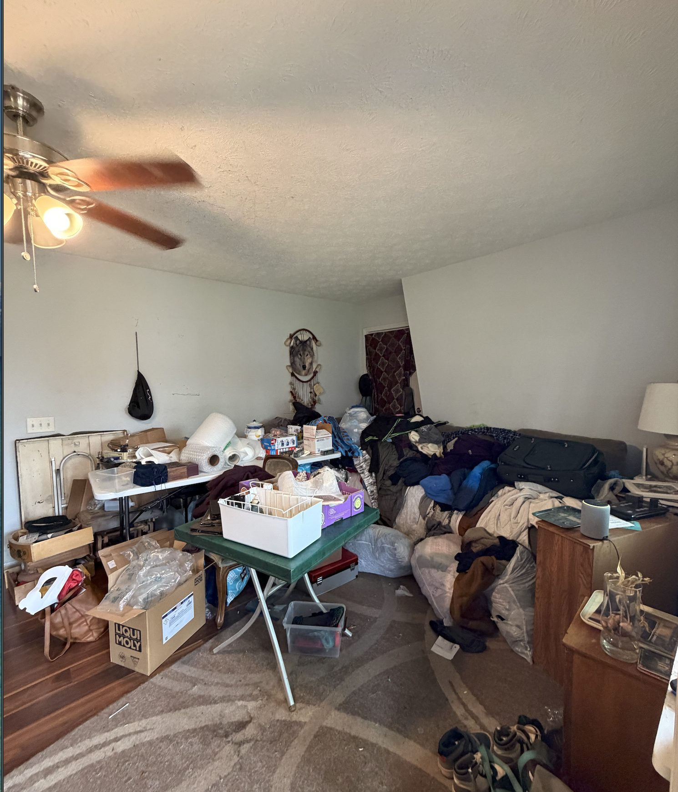

Case Study · Lake Lanier, GA · In progress
A lake house with good bones and eleven kinds of trim.
The exterior is finished. The inside exists as a plan, a set of renders and a written specification — which is the part the owners are building from this year.
- Scope
- Whole home · exterior · kitchen and living plan
- Role
- Design lead · floor plan · finish specification
- Status
- Exterior complete · interior specified
 After
After
After
The outside came first, on purpose.
Roofline, porch and paint set the vocabulary every interior decision then had to answer to.
The gambrel roof and the porch were the two things worth keeping, so the exterior work protected them: board-and-batten repaired rather than replaced, a warm off-white body, a green door, and a stained cedar stair to the grade.
Interior photography does not exist yet. What follows is the plan and the renders the owners are working from, shown at full size.
Concept
One room downstairs, and a sage kitchen in the corner of it.
The plan takes out the wall between the kitchen and the living room, puts the range on the window wall, and keeps a peninsula short enough to walk around with a cooler.

Concept
Concept
Concept
ConceptBefore
Bought full, sold as-is.

Before
Before
BeforeThe house came with everything still in it, a brass ceiling fan in every room, and carpet over the original floors. Measuring took two visits because half the rooms could not be walked.
What was specified
The list the owners are ordering from.
- Exterior — board-and-batten repaired, warm off-white body, green door
- Cabinetry — flat-panel sage, ceiling height on the tall wall
- Counters — concrete-look quartz, square edge, tile to the window
- Floors — engineered white oak, one material through the main level
- Trim — one profile, replacing the eleven that were there
- Lighting — opal globe pendants, no recessed cans in the living end
Work With Me
Starting a remodel? Let's talk early.
The best decisions happen before the first hammer swings — before tile is ordered, before walls are framed, before a single trade is on site.
Book an Initial Consultation$150
Credited in full toward whatever you book next
- 30-minute video call
- Honest read on scope and budget range
Next project
Lisa & Alex's bath